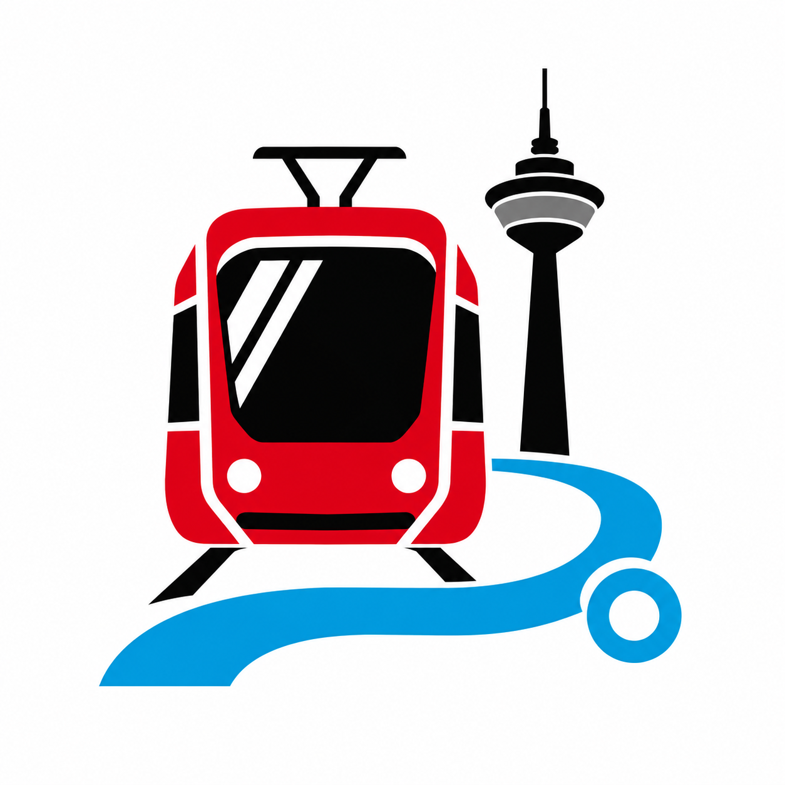

Der Ort.
An welcher Haltestelle oder auf welchem Streckenabschnitt hast du die Kontrolle erlebt?
Unterwegs in Düsseldorf
Ein Kontrolltagebuch für unsere Stadt: Erlebte Fahrkartenkontrollen mit Ort, Zeitpunkt und Linie dokumentieren.
Projekt im Aufbau

Die Idee
An welcher Haltestelle oder auf welchem Streckenabschnitt hast du die Kontrolle erlebt?
Datum und Uhrzeit ordnen deine Beobachtung ein und machen den Eintrag nachvollziehbar.
Die passende Bahn- oder Buslinie verbindet deine Beobachtung mit dem Düsseldorfer Liniennetz.
Die Gestaltung und das technische Grundgerüst stehen. Karte, Einträge und Statistiken sind als nächste Schritte geplant und auf dieser Seite noch nicht verfügbar.